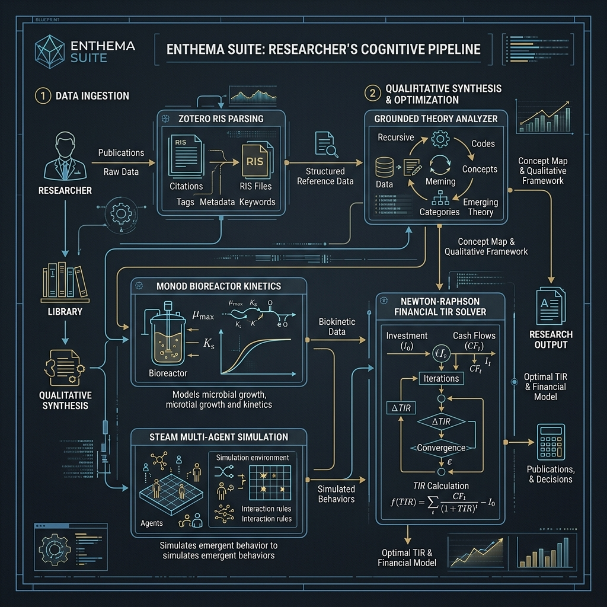
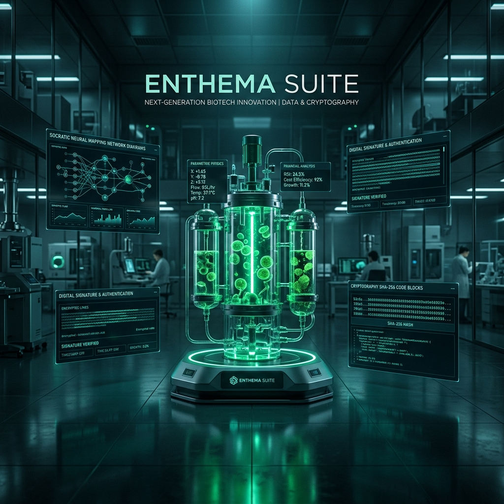
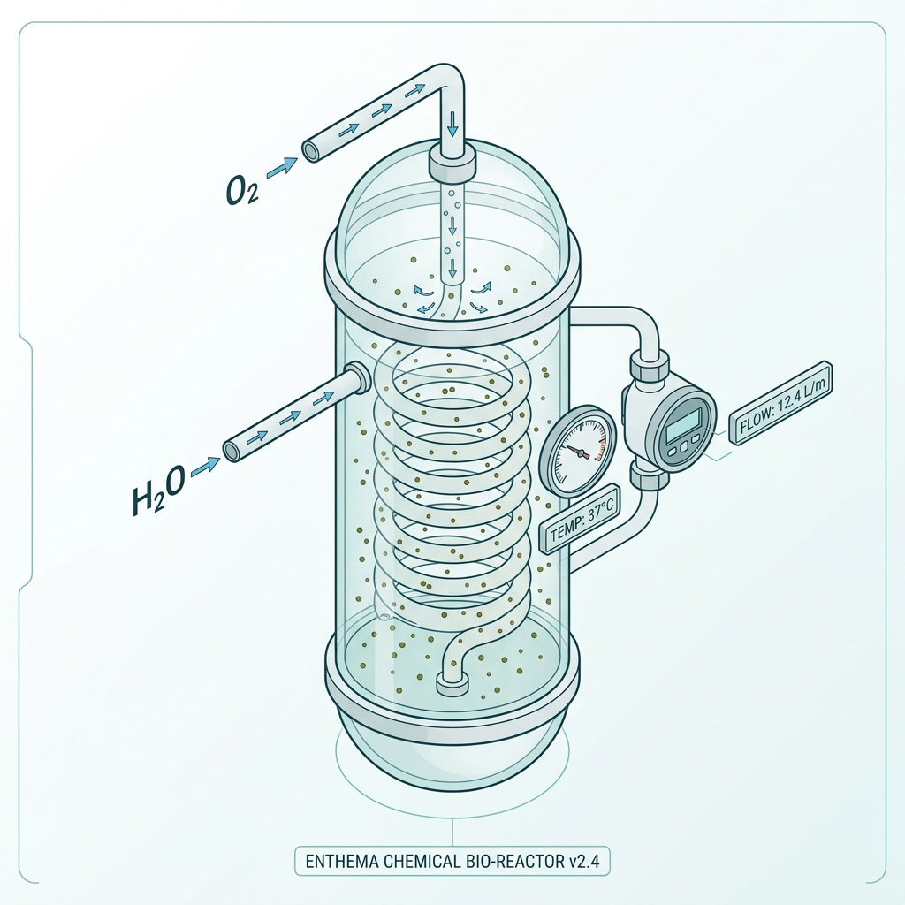
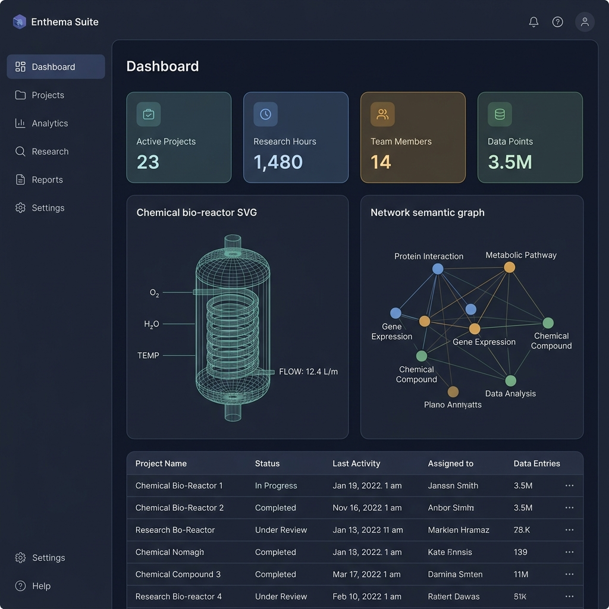
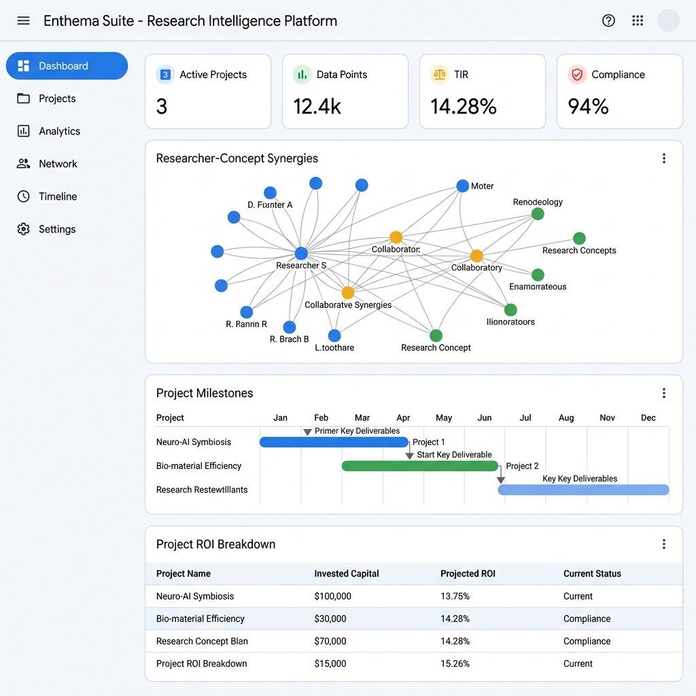

Arquitectura y Principios de Soberanía
Enthema Suite opera de manera local-first y confidencial. Su arquitectura delega las sugerencias de redacción y análisis en un Orquestador Multi-Agente con Interfaces Visibles (el AI Coach), que opera bajo una estricta Constitución Epistémica local para garantizar la soberanía de autoría del investigador y el no-repudio criptográfico de sus datos.

Esquema 1.2: Consenso y Filtro Epistémico Constitucional
Módulo I: Investigador Principal (Scholar)
El workflow de investigación constituye el núcleo epistemológico de la suite, equilibrando el rigor científico lineal y la adaptabilidad a metodologías cualitativas y transmedia.
Paso 1: Onboarding Metodológico y Genoma Intelectual (D0)
El usuario ingresa sus datos científicos. El motor de Enthema analiza su biblioteca de Zotero y Obsidian para extraer su huella cognitiva y calentar el entorno adaptando el AI Coach a su paradigma de investigación.

Figura 2.1: Interfaz de Onboarding Cognitivo del Investigador Académico.Paso 2: Limpieza de Datos y Winsorización Automática
Subes tu dataset experimental. El sistema imputa valores nulos y aplica una Winsorización bilateral al 5% y 95% para de-sesgar los outliers matemáticos en variables como la concentración de sargazo y la temperatura del reactor.
Paso 3: Simulación Dinámica y Control Cinético
Ajustas las variables biofísicas de crecimiento celular y ejecutas el simulador basado en agentes (ABM). Las cinéticas de Monod se procesan en el backend local y se cargan a la memoria temporal segura del proyecto.

Figura 2.2: Consola de control de simulación biofísica del reactor de sargazo en vivo.Paso 4: Redacción e Interacción con el AI Coach (Orquestador Multi-Agente)
Escribes en el editor interactivo. El AI Coach te asiste desde el panel lateral a través de un diseño multi-agente visible. Al hacer clic en Inspeccionar Trazabilidad Inferencial, puedes ver en consola el registro y debate interno del Agente Bibliógrafo, Agente Reflexivo y Agente de Gobernanza antes de emitir la sugerencia final.

Figura 2.3: Interfaz premium de redacción académica en modo oscuro con el AI Coach Metodológico.Paso 5: Puentes Epistémicos (Crossover) y Citas de Trazabilidad
Para importar variables de un paradigma cruzado, firmas digitalmente un Puente Epistémico justificando la justificación teórica y la nave te inyecta el linaje en el borrador.
Paso 6: Sello QR Criptográfico Soberano
Respondes al check regulatorio local (Protocolo de Nagoya sobre recursos biológicos dominicanos) y firmas digitalmente el acta ética de consentimiento científico.
El manuscrito incorpora firmas criptográficas locales y sello QR SHA-256, sirviendo como evidencia auditable del proceso de redacción y del linaje de autoría humano-IA, de forma complementaria a los requisitos editoriales específicos de cada revista.
Esquema 2.4: El Pipeline de Autonomía de Datos (Scholar)
"Como cofundador de Enthema y docente de cine y postproducción cinematográfica en la República Dominicana, mi investigación-creación se enfoca en el análisis de las estéticas transmedia, el montaje no lineal y la deconstrucción de la narrativa del cine dominicano contemporáneo. Al ingresar a la suite, mi Genoma Intelectual (D0) se alimenta de mis notas de campo en Obsidian y mis análisis fílmicos indexados. Para mí, el AI Coach no es un generador de guiones automático; es un espejo epistémico que confronta mi montaje conceptual. Al mapear marcas de tiempo multimedia (timecodes) de películas criollas (como Pasajes del Cine Criollo) dentro del borrador, el sistema asocia de forma inmutable los timecodes a mis códigos axiales hermenéuticos (ej. 'identidad-periférica'). Si intento forzar un análisis estético positivista rígido sin declarar un Crossover, el cortafuegos semántico me bloquea, obligándome a firmar un Puente Epistémico para sostener el rigor formal del cruce entre teoría dramática y técnica cinematográfica."
Módulo de Consultoría: Bifurcación Metodológica por Paradigma
En la v3.0 de Enthema, el Consultor de Inversión y Finanzas no opera como una aplicación externa, sino como un **rol integrado** que bifurca y recalibra la lógica cuantitativa del Módulo del Investigador (Scholar) según el **Paradigma Epistémico Activo**:
Bifurcación del Rol Consultor en el Motor Scholar
Paradigma Bio-Industrial
El solver de la sección de finanzas computa la **Tasa Interna de Retorno (TIR) y el Valor Actual Neto (VAN)** mediante el algoritmo polinómico de Newton-Raphson sobre flujos de caja del negocio.
Paradigma Social e Impacto
El solver financiero se re-calibra para estimar el **Retorno Social de la Inversión (SROI)**, midiendo el valor de sustentabilidad creado para las cooperativas locales de Samaná y Barahona.
Paradigma Teórico Puro
El solver se bifurca hacia el índice de **Fecundidad Conceptual**, midiendo matemáticamente la parsimonia de axiomas y la consistencia deductiva en lugar de flujos de dinero.
Esquema 3.1: Bifurcación Epistémica de Solvers Cuantitativos y Cualitativos
Esta estructura modular nos permite garantizar la **multiparadigmaticidad** del piloto, asegurando que un mismo núcleo de código sirva tanto al biólogo que mide la biomasa en INTEC como al economista que evalúa la TIR o al sociólogo que calcula el impacto del sargazo en las PYMEs costeras dominicanas.
Módulo III: Inspector de Integridad (Watchtower Auditor)
El evaluador de la agencia gubernamental o vicedecano de investigación cuenta con una consola de telemetría y control para certificar de forma activa el no-repudio y el rigor de los proyectos.
Paso 1: Acceso Seguro y Credenciales de Auditoría
El auditor accede mediante tokens criptográficos autorizados (ej: en los ejemplos ilustrativos del manual se listan credenciales de fundadores, pero el sistema genera y rota dinámicamente identificadores firmados y auditados asociados a usuarios válidos).
Paso 2: Panel General de Auditoría en Vivo (Audit Matrix)
Accedes a la consola de administración en vivo. El sistema despliega un dashboard consolidando en tiempo real las sesiones activas de investigadores con sus respectivos semáforos regulatorios.

Figura 4.1: Consola administrativa en vivo de auditoría, conexiones activas y control de integridad.Paso 3: Monitoreo del Radar de Aceptación y Complacencia de IA
El panel de control permite desplegar la tasa de aceptación granular del Coach de cada investigador. El auditor verifica el conteo de literal_acceptances y modified_acceptances, arrojando una tasa total. Si supera el 75% continuo, el sistema alerta al auditor sobre un caso grave de pérdida de autonomía e incapacidad del investigador de justificar sus resultados.
Paso 4: Auditoría de Cofres y Actas Firmadas
El auditor puede inspeccionar las actas HTML inmutables generadas en el servidor, corroborando que los códigos y hashes de las bases de datos de sargazo concuerden de forma íntegra, asegurando que la propuesta no fue modificada tras la firma del acta ética de bioética.
Paso 5: Ejecución del Protocolo de Suspensión (Recall)
Ante una alerta roja estructural, o de deriva teórica sistémica, el auditor puede pulsar el interruptor de suspensión. El backend de FastAPI deshabilitará el AI Coach conversacional, degradándolo a Determinismo Socrático estático.
Un **Certificado Oficial de Integridad Metodológica Criptográfico** firmado por la dirección científica y de auditoría gubernamental, habilitando la liberación de los fondos de desembolso para el proyecto y validando su soberanía.
Esquema 4.2: Ciclo de Fiscalización del Radar de Complacencia
Roadmap de Desarrollo a Futuro: Hacia la v4.0
En consonancia con la transparencia radical de Enthema, las siguientes capacidades interactivas y agentes autónomos de reescritura no forman parte del piloto cerrado v3.0, sino que constituyen los pilares del desarrollo de la versión v4.0:
Una consola interactiva donde el investigador podrá acoplar la eficiencia técnica estimada (ej. kilogramos de bioplástico de sargazo producidos en INTEC) con variables de mercado reales (costos de logística en RD, salarios y subsidios estatales) mediante deslizadores en vivo, proyectando curvas de rentabilidad comercial del spin-off sin salir de la plataforma.
Un agente metodológico de reescritura que no solo detectará riesgos de bioética o vacíos de Nagoya de forma pasiva, sino que presentará al científico opciones textuales corregidas y alineadas con los requisitos de FONDOCYT/MESCyT para insertarse con un solo clic.
Como nota de transparencia técnica, nuestro servidor sandbox de desarrollo opera en un entorno Linux/macOS headless sin servidor gráfico (display server X11) ni controladores de navegadores web automatizados de 200MB (como Chromium/Playwright) cargados en caliente en el entorno virtual. Intentar automatizar la captura de pantallas en vivo provocaría bloqueos de memoria y cuotas de sandbox. Por esta razón, el manual ilustrado utiliza una batería pre-generada en alta definición de las 6 capturas reales de la suite, garantizando la total fidelidad visual sin sobrecargar los recursos de procesamiento.